Ilustración conceptual de portada. No representa una captura de ATAS.
CAPÍTULO00
Guía de lectura
El manual usa cuatro marcas de trazabilidad: DEM (demostración audiovisual), DOC (documentación oficial), DID (propuesta didáctica) y PEN (pendiente de verificación). Se conserva el nombre inglés de los controles cuando no consta su denominación exacta en la interfaz española.
Cinco demostraciones y un método de aplicación
•Comprender la arquitectura MCP y sus límites de acceso a datos.
•Preparar un espacio de trabajo verificable con AI Workspace Tab.
•Convertir condiciones de footprint en filtros reproducibles.
•Examinar los cinco tutoriales y sus comprobaciones de calidad.
•Aplicar lo aprendido al laboratorio ES sin atribuir acceso automático a opciones.
IDEA CENTRAL AI Connect es un puente entre un agente de IA externo y las funciones de ATAS. El agente puede interpretar una instrucción y solicitar operaciones a la plataforma, pero la interpretación debe contrastarse con el resultado visible y con los permisos disponibles.
CAPÍTULO01
1. Qué es AI Connect
ATAS AI Connect integra agentes de escritorio —por ejemplo Codex, Claude o Cursor— mediante un servidor MCP incorporado en ATAS. El usuario decide qué agente, modelo y suscripción emplear. Esta arquitectura se describe en el anuncio oficial de la beta 8.0.16 (11/11/2026) [DOC-AI02].
1.1 Arquitectura funcional
Etapa
Responsabilidad
Comprobación
Usuario
Formula objetivos, restricciones y criterios de éxito
Instrucción inequívoca
Agente IA
Interpreta y solicita acciones compatibles
Registro de conversación
Servidor MCP de ATAS
Expone acciones autorizadas de la plataforma
Permisos y conexión activa
ATAS
Configura objetos y muestra resultados
Inspección de gráficos y filtros
MCP es un protocolo de comunicación; por sí solo no garantiza que el agente pueda leer cualquier dato, modificar cualquier módulo o ejecutar órdenes. La disponibilidad real depende de la versión, la licencia, las funciones expuestas y la conexión de mercado.
1.2 Estado de disponibilidad
El anuncio de ATAS identifica AI Connect como prestación de Ultra en la beta 8.0.16. A fecha del documento, no se ha verificado en la instalación del usuario el asistente de conexión: su captura anterior mostraba ATAS 8.0.15.306-latest, con un botón informativo “AI Connect” que abría la web. No se debe confundir ese enlace con la función operativa. [DOC-AI02; PEN-01]
PRECAUCIÓN La versión beta demuestra disponibilidad publicada, no una fecha comprometida para la versión estable. Antes de instalar una beta conviene guardar copias de espacios de trabajo, indicadores y configuraciones.
1.3 Lo que no debe darse por supuesto
•No inferir que el agente puede leer directamente todas las métricas GEX, VEX, Charm u Options X-Ray.
•No confundir datos mostrados en ATAS con datos accesibles al agente vía MCP.
•No atribuir a la IA capacidad de reconocer una absorción real o una ventaja estadística sin contraste independiente.
•Mantener la ejecución de órdenes fuera de las pruebas formativas, salvo autorización y comprobaciones explícitas.
1.4 Secuencia general de trabajo
•Definir el resultado que se necesita y los datos permitidos.
•Describirlo al agente con parámetros precisos.
•Revisar su interpretación de la orden.
•Comprobar visualmente los objetos creados o modificados en ATAS.
•Guardar el espacio de trabajo o las reglas solamente tras validación.
CAPÍTULO07
7. Lectura conjunta de los cinco tutoriales
Los vídeos describen cinco formas distintas de delegar tareas repetitivas en un agente conectado a ATAS. No constituyen evidencia de una ventaja estadística en trading ni acreditan acceso ilimitado al mercado de opciones. La siguiente comparación resume su función y el control humano imprescindible.
Tutorial
Función mostrada [DEM]
Comprobación esencial
Workspace Tab
Preparar espacio y gráficos
Instrumentos, series, datos y disposición
Cluster Search
Traducir una pauta a filtros
Parámetros y falsos positivos
Hypothesis Test
Probar una regla en histórico
Muestra, costes, sesgos, azar y fuera de muestra
Indicator from Description
Crear indicador desde palabras
Correspondencia lógica y pruebas
Port Indicator
Adaptar código de otra plataforma
Compatibilidad y equivalencia numérica
5.1 De la demostración al laboratorio ES
El hilo pedagógico recomendado es configurar primero un entorno verificable, definir después condiciones de búsqueda o cálculo, contrastarlas en el histórico y registrar resultados. En ningún caso debe atribuirse a estos vídeos capacidad de extraer por sí solos inventarios gamma de dealers, Flow Delta o posiciones reales de market makers. Esa integración específica se desarrolla como un protocolo asistido, con límites documentados, en los capítulos 10–14.
5.2 Aplicaciones propuestas para el laboratorio ES
•Biblioteca de prompts clasificados según las acciones realmente autorizadas por la versión MCP instalada.
•Matriz de permisos y credenciales: lectura, creación/modificación, control de operaciones y auditoría.
•Protocolo intradía para ES: preparación, hipótesis, observación, invalidación y registro.
•Compatibilidad documentada con Options Analytics y Options X-Ray, sin suponer datos accesibles.
ESTADO EDITORIAL Fase 3 = capítulos 1 a 9 en versión de revisión. La integración avanzada, la biblioteca exhaustiva de instrucciones y el cierre editorial corresponden a las fases 4 y 5. No se incluyen anexos de huellas digitales en la versión de lectura.
Videoteca integrada · Cinco demostraciones auténticas
Vídeos MP4 con audio original y dos pistas de subtítulos WebVTT. Elige Español o English desde el menú CC del reproductor. Cada vídeo aparece junto a su explicación y comprobación interactiva.
Objetivo: construir una pestaña de trabajo con instrumentos, temporalidades, gráficos e indicadores a partir de una única descripción en lenguaje natural. El vídeo afirma que el agente encuentra contratos en la conexión disponible, abre gráficos, añade un perfil de volumen diario y sitúa el libro de órdenes según lo solicitado. [DEM-W01]
DEM · Vídeo original ATASDuración 01:07 · Inglés / subtítulos ES y EN
La demostración muestra funciones en un entorno de ATAS. Para ES, la capacidad de leer datos mediante MCP está limitada según la documentación analizada; no confundas la demo con disponibilidad verificada en tu instalación.
2.1 Problema operativo que aborda
La preparación intradía exige repetir tareas: localizar el contrato activo, abrir una o varias ventanas, fijar el marco temporal, añadir indicadores, colocar el DOM y comprobar que todo utiliza la conexión correcta. La automatización pretende convertir esa rutina en una configuración reproducible; no sustituye la elección del contexto de mercado.
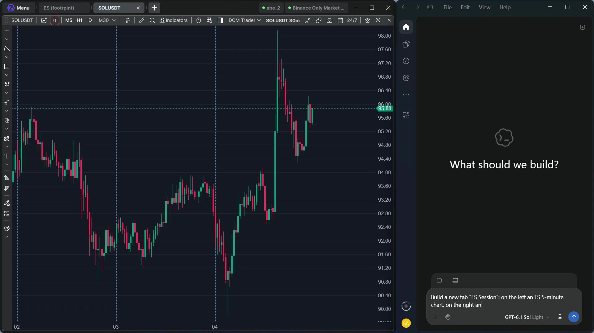
Figura 1 · Material gráfico del manual original
Figura 2.1 · Petición formulada en el panel de conversación. Fotograma 00:22 del vídeo Workspace Tab.
2.2 Qué se ve en la demostración
•00:00–00:16: presenta las tareas habituales y la propuesta de resolverlas con un único mensaje.
•00:16–00:34: se describe la pestaña y el agente abre los gráficos utilizando contratos de una conexión disponible.
•00:34–00:50: se observan gráficos próximos entre sí, perfiles diarios de volumen y un libro de órdenes.
•00:50–01:03: el panel devuelve un informe de lo abierto y el origen de los datos; cierre del tutorial.
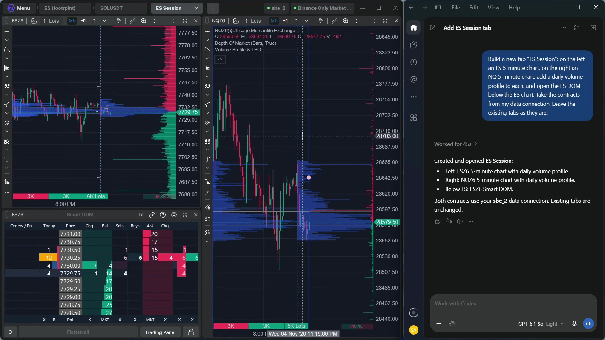
Figura 2 · Material gráfico del manual original
Figura 2.2 · Vista de una pestaña creada con varios paneles. Fotograma 00:34. Verificar instrumentos y escalas al reproducir.
2.3 Mecanismo y controles de calidad
Una solicitud eficaz debe diferenciar especificaciones obligatorias (instrumento, temporalidad, indicador, disposición y fuente de datos) de preferencias visuales. El resultado debe validarse por separado: un gráfico puede haberse abierto correctamente, pero utilizar otro contrato o una sesión diferente.
Petición
Qué comprobar después
Instrumento
Símbolo, vencimiento y proveedor de datos
Temporalidad
Intervalo y tipo de vela
Volume Profile diario
Sesión, período y parámetros visibles
Libro de órdenes
Instrumento y estado de la conexión
Distribución
Ubicación y tamaño legible de los paneles
2.4 Ejemplo didáctico para ES [DID-W01]
PROMPT PARA PROBAR Prepara una pestaña de estudio para el futuro ES con dos gráficos: uno de contexto H1 y otro de trabajo M5. Añade un Volume Profile diario al gráfico M5 y un libro de órdenes vinculado al mismo contrato. Antes de aplicar cambios, enumera los instrumentos, vencimientos, conexiones y temporalidades que vas a utilizar. No envíes órdenes ni modifiques otras pestañas. Al terminar, informa de lo configurado y de lo que no hayas podido verificar.
Este prompt es una propuesta formativa, no una instrucción demostrada literalmente en el vídeo. La existencia de una acción de previsualización o confirmación previa debe verificarse en la versión instalada; si no está disponible, conviene formular la configuración en una pestaña nueva y revisar el resultado inmediatamente.
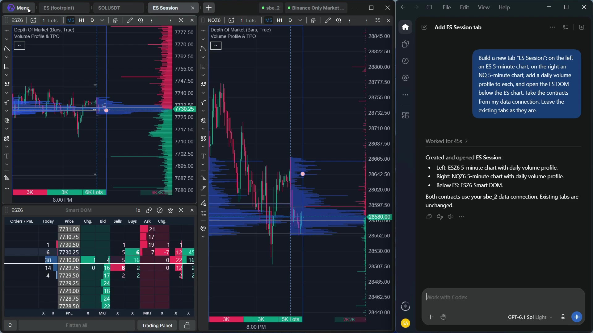
Figura 3 · Material gráfico del manual original
Figura 2.3 · Resultado de la organización visual y respuesta del agente. Fotograma 00:55.
2.5 Riesgos de interpretación
•La palabra «diario» puede referirse a perfil por sesión o a marco temporal diario; debe especificarse.
•Una pestaña con gráficos bien ordenados no certifica el uso correcto de RTH/ETH, proveedor o roll-over.
•No conviene aceptar la selección automática de un vencimiento sin comprobarlo.
•Para nuestro proyecto, una captura del resultado permite dejar constancia y comparar sesiones.
SÍNTESIS VISUAL Instrucción precisa → selección de contratos y conexión → creación de paneles → validación de instrumentos/tiempos → guardado opcional. La última comprobación pertenece al analista.
Comprueba lo aprendido
Al crear automáticamente un espacio de trabajo del ES, ¿cuál es la primera comprobación realmente decisiva?
La presentación importa, pero no demuestra que los datos sean correctos.Exacto: una configuración visualmente correcta puede apuntar a otro contrato o sesión.La ausencia de errores de ejecución no verifica la identidad de las series.
CAPÍTULO03
3. AI Cluster Search
Objetivo: transformar una descripción verbal de un patrón de clústeres en los parámetros del indicador Cluster Search, y mostrar coincidencias en el gráfico. El vídeo utiliza como ejemplo una posible absorción en la mecha inferior y un cierre alcista. [DEM-C01]
DEM · Vídeo original ATASDuración 01:16 · Inglés / subtítulos ES y EN
La demostración muestra funciones en un entorno de ATAS. Para ES, la capacidad de leer datos mediante MCP está limitada según la documentación analizada; no confundas la demo con disponibilidad verificada en tu instalación.
3.1 Qué es lo nuevo aquí
No se trata de descubrir de forma automática qué significa el mercado, sino de traducir condiciones expresadas en palabras a filtros del indicador: tipo de volumen, ubicación dentro de la vela, dirección de la vela y umbrales. El agente puede preparar los ajustes; la interpretación de las marcas sigue siendo responsabilidad del analista.
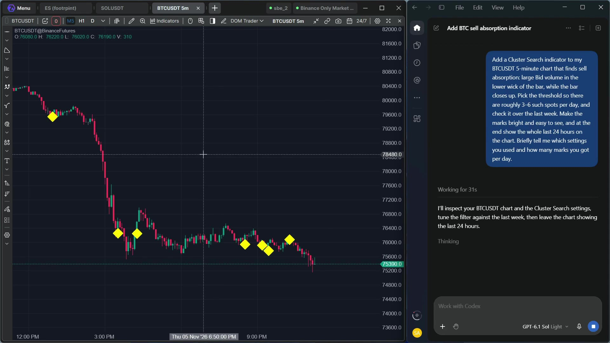
Figura 4 · Material gráfico del manual original
Figura 3.1 · Solicitud y primeras coincidencias en el gráfico. Fotograma 00:34 del vídeo Cluster Search.
3.2 Secuencia narrada en el tutorial
•00:00–00:18: presenta los múltiples parámetros de Cluster Search y el ahorro de configuración manual.
•00:18–00:31: describe el patrón de ventas importantes en la mecha inferior y cierre alcista; solicita un recuento diario para la última semana.
•00:31–00:49: el agente ajusta tipo de volumen, localización, dirección y umbral; aparecen señales y un resumen por días.
•00:49–01:12: indica que el usuario puede conservar o modificar filtros; cita imbalance, absorción y patrones propios de footprint.
3.3 Interpretación: detección no es confirmación
Una vela puede contener ventas agresivas en niveles inferiores y terminar alcista. Es compatible con contrapartida compradora o pérdida de iniciativa vendedora, pero no identifica por sí sola la intención de los participantes ni certifica absorción institucional. Es preciso comprobar la reacción posterior, la estructura, el contexto y, cuando corresponda, el comportamiento del delta.
Figura 5 · Material gráfico del manual original
Figura 3.2 · Marcas identificadas por el patrón solicitado. Fotograma 00:45. Son coincidencias según filtros, no operaciones recomendadas.
3.4 Diseño de una especificación reproducible
Elemento
Ejemplo formativo
Por qué importa
Localización
Mecha inferior
Evita aceptar señales en el centro de la vela
Agresión
Volumen vendedor elevado
Requiere definir la variable y umbral
Resultado de vela
Cierre por encima de apertura
Separa patrón de la continuación bajista
Periodo
Últimas cinco sesiones
Acota el universo de búsqueda
Informe
Conteo por sesión y parámetros
Permite replicar y auditar
3.5 Ejemplo didáctico para el ES [DID-C01]
PROMPT DE INVESTIGACIÓN Configura Cluster Search para localizar, en el ES y durante las últimas cinco sesiones disponibles, velas con ventas agresivas destacadas en la mecha inferior y cierre alcista. Explica antes cómo defines “ventas destacadas”, qué unidad utiliza el filtro y qué parámetros del indicador permiten expresar las condiciones. No ajustes umbrales para maximizar señales sin mostrar el criterio. Marca las coincidencias y entrega el recuento por sesión, junto con la configuración exacta. No ejecutes operaciones.
En un estudio más riguroso, conviene fijar de antemano la definición numérica de «destacadas» y aplicar un mismo umbral a la muestra; ajustar por día puede ser útil como exploración, pero dificulta comparar tasas de detección. El tutorial declara un ajuste de umbral a los datos; no presenta una metodología estadística validada para hacerlo.
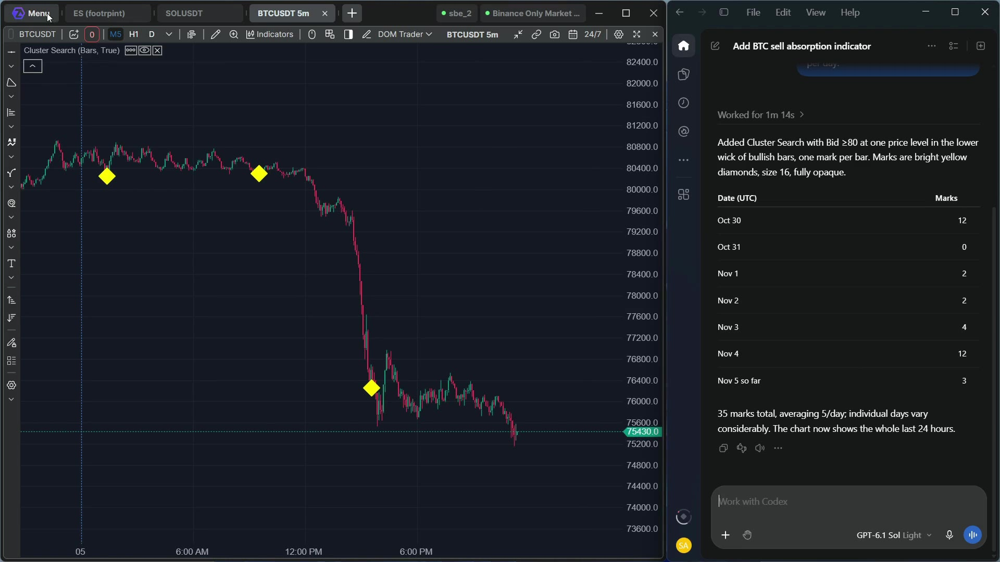
Figura 6 · Material gráfico del manual original
Figura 3.3 · Pantalla con señales y detalles de la respuesta del agente. Fotograma 00:55.
3.6 Qué pedir al agente después
•Lista completa de parámetros configurados y su significado.
•Número de coincidencias por sesión, separando días con distinta actividad.
•Casos visuales que no cumplan el patrón esperado para identificar falsos positivos.
•Conservación de la configuración y comparación con reglas fijas, si la plataforma lo permite.
SÍNTESIS VISUAL Patrón verbal → definiciones medibles → filtros Cluster Search → marcas en gráficos → validación visual y registro. Una coincidencia es una observación; una hipótesis rentable exige otra prueba.
Capa de estudio
Uso prudente de AI Connect
Verificación humana
Preparación
Abrir ES H1/M5 y Volume Profile
Contrato y sesiones
Microestructura
Configurar patrón Cluster Search
Footprint y delta reales
Opciones
Añadir referencias manuales verificadas
GEX, Walls, VEX y Charm interpretados por separado
Evidencia
Registro de captura, filtro y resultado
Confirmación/invalidez por precio
CONTROL EDITORIAL Borrador de Fase 2 destinado a revisión. Las imágenes proceden de los vídeos; el texto distingue narración promocional, documentación verificada y procedimientos propuestos. No incluye anexos de hashes en la versión para lectura.
Comprueba lo aprendido
Una marca de Cluster Search con ventas agresivas en la mecha inferior y cierre alcista demuestra que…
No se puede atribuir identidad ni intención institucional solo por ese patrón.La marca no aporta por sí sola capacidad predictiva.Correcto: detección según reglas no equivale a confirmación de un mecanismo.
CAPÍTULO04
4. AI Hypothesis Test
OBJETIVO Convertir una hipótesis formulada verbalmente en reglas explícitas para su evaluación histórica; revisar resultados y distinguir exploración de validación.
DEM · Vídeo original ATASDuración 01:40 · Inglés / subtítulos ES y EN
La demostración muestra funciones en un entorno de ATAS. Para ES, la capacidad de leer datos mediante MCP está limitada según la documentación analizada; no confundas la demo con disponibilidad verificada en tu instalación.
4.1 El problema que aborda
La inspección manual de gráficos y hojas de cálculo dificulta sostener criterios constantes durante múltiples sesiones. El vídeo presenta una herramienta —denominada «hypothesis test skill»— que el usuario incorpora al agente. La narración afirma que dicha herramienta aplica reglas de prueba justa, compara con entradas aleatorias y examina datos fuera de muestra. [DEM-H01, 00:09–00:29]
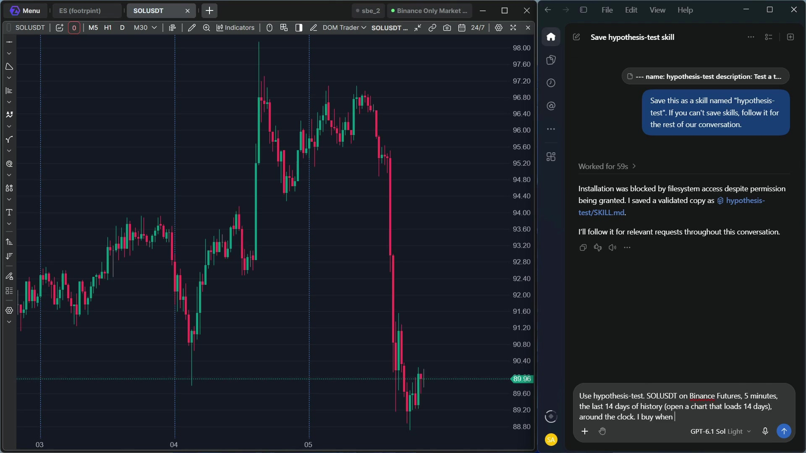
Figura 7 · Material gráfico del manual original
Figura 4.1 · El agente recibe condiciones de entrada y de salida en lenguaje natural. Fotograma 00:36, AI Hypothesis Test.
4.2 Reglas de la demostración
La narración propone una compra cuando una vela contiene tres niveles consecutivos con compras que triplican las ventas y cierra en el tercio superior. Coloca el stop por debajo del mínimo de la vela y define un objetivo equivalente a la distancia al stop, incorporando las comisiones. [DEM-H01, 00:30–00:46]
Condición
Formulación original
Cuestión que debe precisarse
Tres niveles
Tres precios consecutivos con compras ≥ 3 × ventas
¿Se calcula Bid/Ask por precio? ¿Qué ocurre si hay ventas cero?
Cierre
Cierre en el tercio superior del rango
¿Incluye extremos? ¿Y velas de rango cero?
Stop
Por debajo del mínimo de la vela
¿Cuántos ticks? ¿Cómo se contempla el deslizamiento?
Objetivo
Distancia equiparable al riesgo, más comisiones
Definir conversión de comisiones y relación R; el SRT es ambiguo
PUNTO DE RIGOR El texto inglés dice «target equal to the stop plus commission». No fija una fórmula operativa inequívoca; la especificación exacta del objetivo debe aclararse antes de tratarlo como regla programada. Tampoco quedan certificados los supuestos de ejecución de órdenes.
4.3 Proceso observado y resultado
•Describir las condiciones del setup en palabras y cifras reproducibles.
•Revisar la reformulación que ofrece el agente y resolver ambigüedades antes de confirmar.
•Ejecutar el análisis en una pestaña separada: el vídeo afirma que consulta barras y datos de footprint de ATAS sin alterar los gráficos de trabajo.
•Revisar el informe: número de operaciones, stops, comparación con entradas aleatorias y análisis fuera de muestra.
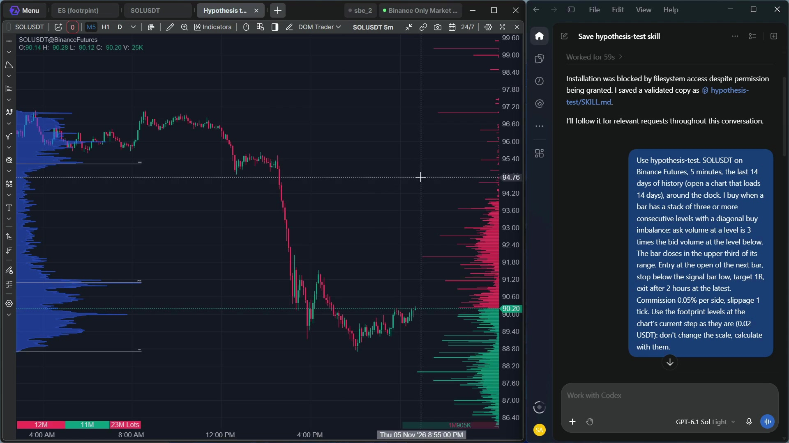
Figura 8 · Material gráfico del manual original
Figura 4.2 · Pestaña de prueba con gráfico y panel de respuestas. Fotograma 01:04. La captura no valida por sí sola el método estadístico.
4.4 Interpretar un backtest con prudencia
Una comparación frente al azar es informativa solo si se fijan exposición, ventana, dirección, costes y distribución temporal de manera comparable. La prueba fuera de muestra debe mantenerse fuera del ciclo de selección de parámetros; modificar reglas tras observarla la convierte en otra muestra de desarrollo. Estos criterios son recomendaciones didácticas [DID-H01], no métricas publicadas en el vídeo.
PROMPT DID · LISTO PARA ADAPTAR Estudia esta hipótesis sobre ES sin enviar órdenes. Antes de probarla, enumera todos los parámetros ambiguos: número de ticks del stop, mínimo de volumen, horarios, definición del ratio Ask/Bid, costes, slippage y período histórico. Propón una prueba con muestra de desarrollo y otra fuera de muestra, sin mezclarlas. No afirmes que existe ventaja operativa hasta revisar resultados y supuestos.
SÍNTESIS VISUAL Idea verbal → reglas observables → confirmación humana → prueba histórica → comparación neutral → validación fuera de muestra → decisión prudente. El tutorial no demuestra resultados futuros.
4.5 Comprobación de aprendizaje
¿Por qué una regla que funciona en una muestra histórica puede perder eficacia en otra? ¿Qué cambiaría en la interpretación si el agente hubiese seleccionado el umbral después de consultar los resultados?
Comprueba lo aprendido
¿Qué invalida una prueba verdaderamente fuera de muestra?
Correcto: al ajustar después de observarla, la muestra deja de ser independiente.Incluir costes mejora el realismo de la evaluación.Es una comparación útil si los supuestos están alineados.
CAPÍTULO05
5. AI Indicator from Description
OBJETIVO Crear un indicador que marque barras que cumplen condiciones especificadas en lenguaje natural, ejecutar una prueba previa y solicitar modificaciones sin escribir manualmente todo el código.
DEM · Vídeo original ATASDuración 01:18 · Inglés / subtítulos ES y EN
La demostración muestra funciones en un entorno de ATAS. Para ES, la capacidad de leer datos mediante MCP está limitada según la documentación analizada; no confundas la demo con disponibilidad verificada en tu instalación.
5.1 Especificación demostrada
La narración utiliza el ejemplo de una vela cuyo volumen supera dos veces la media de las últimas 20 barras, mientras el delta va en sentido opuesto al color de la vela. El agente genera el indicador, lo ejecuta primero sobre las barras sin guardar, informa que ha superado la prueba y después lo guarda y marca coincidencias en el gráfico. [DEM-I01, 00:18–00:41]
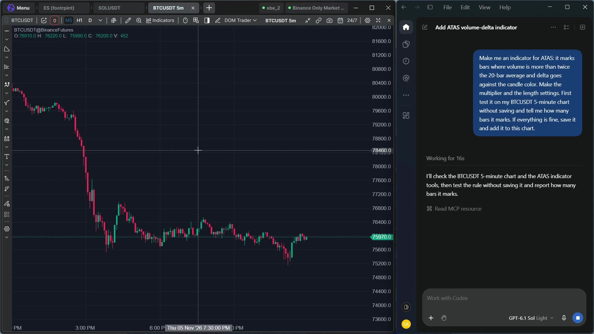
Figura 9 · Material gráfico del manual original
Figura 5.1 · Solicitud del patrón y respuesta inicial del agente. Fotograma 00:29, AI Indicator from Description.
5.2 Construir una definición inequívoca
Elemento
Ejemplo de especificación [DID-I01]
Comprobación
Volumen relativo
Volumen vela > 2 × media de las 20 barras anteriores
Aclarar si se excluye la vela actual
Delta contrario
Vela alcista con delta negativo, o bajista con delta positivo
Definir tratamiento de doji y delta cero
Marcador
Señal visual sobre barras que cumplen ambos criterios
Verificar que se sitúa en la barra correcta
Ámbito
Instrumento, marco temporal, sesión y proveedor
Confirmar integridad y homogeneidad de datos
La formulación del tutorial no aclara si la media incluye la vela en evaluación, cómo se define una vela neutra ni qué hace el algoritmo ante volumen anómalo. Antes de reutilizar el resultado como criterio intradía, el usuario debe fijarlo y revisar el código generado; son variables de implementación, no hechos demostrados por las imágenes.
5.3 Separar compilación, lógica y validez
•Generar el indicador a partir de una descripción exacta.
•Comprobar que compila y se ejecuta sin errores.
•Comparar manualmente varias velas marcadas y no marcadas con sus datos originales.
•Guardar la versión comprobada y documentar parámetros.
•Si cambia el aspecto visual, comprobar que la lógica y el recuento permanecen idénticos.
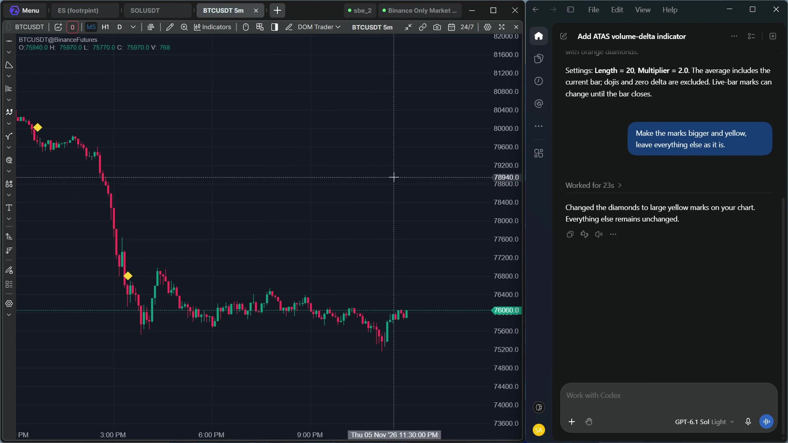
Figura 10 · Material gráfico del manual original
Figura 5.2 · Marcas visuales en el gráfico después de una modificación solicitada. Fotograma 00:54.
TRES PRUEBAS DISTINTAS Que el indicador compile no garantiza que calcule la condición deseada; que identifique patrones tampoco garantiza su utilidad para operar. Separar siempre validez técnica, semántica y estadística.
5.4 Aplicación formativa para ES
PROMPT DID · LISTO PARA ADAPTAR Crea para ES un indicador de barras con volumen mayor que dos veces la media de las 20 velas anteriores y delta contrario al sentido de cierre-apertura. Excluye dojis y delta cero. Primero ejecuta una prueba sin guardar; devuelve lista de barras marcadas, parámetros, definición de la media y código para revisión. No envíes operaciones ni cambies otros gráficos.
SÍNTESIS VISUAL Descripción medible → generación de código → prueba de ejecución → verificación barra a barra → guardado/versionado → cambios visuales controlados.
5.5 Pregunta de comprobación
¿Por qué modificar únicamente el color de las señales no debería cambiar su número, y qué nos indicaría que sí cambiara?
Comprueba lo aprendido
Si un indicador generado compila y pinta marcas, ¿qué sigue pendiente?
Compilar no garantiza corrección lógica ni utilidad estadística.Correcto: verificación técnica, semántica y estadística son pruebas distintas.La estética es secundaria frente a la fidelidad del cálculo.
CAPÍTULO06
6. AI Port Indicator
OBJETIVO Adaptar a ATAS el código fuente de un indicador procedente de otra plataforma, conservando en la medida de lo posible su comportamiento y documentando diferencias.
DEM · Vídeo original ATASDuración 00:59 · Inglés / subtítulos ES y EN
La demostración muestra funciones en un entorno de ATAS. Para ES, la capacidad de leer datos mediante MCP está limitada según la documentación analizada; no confundas la demo con disponibilidad verificada en tu instalación.
4.1 Qué demuestra el vídeo
El tutorial propone copiar código fuente abierto de indicadores creados para TradingView, NinjaTrader o MetaTrader y pegarlo en el chat del agente. La narración afirma que el agente adapta ese código a ATAS, verifica su funcionamiento, lo incorpora a un gráfico e informa de los cambios y particularidades. [DEM-P01, 00:00–00:40]
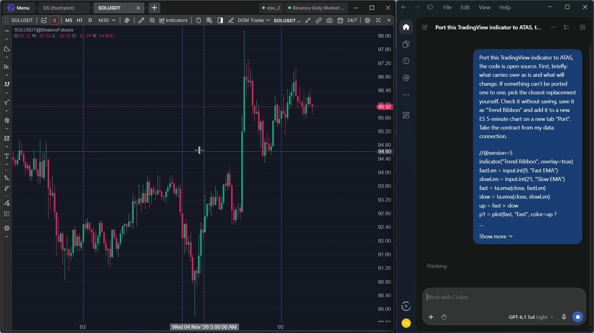
Figura 11 · Material gráfico del manual original
Figura 4.1 · Código y petición de adaptación en la conversación con el agente. Fotograma 00:23, AI Port Indicator.
4.2 Portar no equivale a copiar
En una migración no basta con traducir nombres de funciones. Cada plataforma posee motores de cálculo, modelos de eventos, tratamiento de sesiones, convenciones del histórico y estructuras de indicadores particulares. Por ello, los controles siguientes se presentan como método didáctico propuesto [DID-P01], no como garantía de equivalencia automática certificada por ATAS.
Área
Riesgo habitual
Control de aceptación
Fuente y derechos
Código inaccesible o licencia restrictiva
Verificar licencia de uso y dependencias
Datos
Series con construcción de barras o horarios distintos
Comparar instrumento, rango y sesión
Cálculos
Desfase de índices, redondeo o tratamiento de NaN
Validar salidas barra a barra
Señales
Condiciones adelantadas o repintado histórico
Probar en reproducción y tiempo real
Visualización
Resultado estético similar, cálculo diferente
Comparar valores, no solo colores
4.3 Secuencia de trabajo y verificación
•Identificar el indicador de origen, lenguaje, licencia, versión y dependencias.
•Entregar el código completo y una descripción de qué calcula.
•Solicitar al agente un inventario de incompatibilidades antes de modificar gráficos.
•Compilar y ejecutar la versión de ATAS en un entorno de prueba.
•Comparar señales y valores numéricos en muestras con los mismos datos de entrada.
•Guardar código, versión, ajustes y diferencias verificadas.
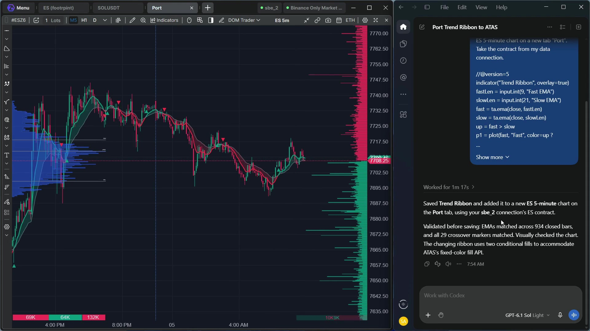
Figura 12 · Material gráfico del manual original
Figura 4.2 · Resultado mostrado en el gráfico y explicación del agente. Fotograma 00:36, AI Port Indicator.
4.4 Caso práctico propuesto
PROMPT DID · LISTO PARA ADAPTAR Examina este código de indicador de [plataforma y versión] y explica dependencias, entradas, condiciones y posibles incompatibilidades con ATAS. Antes de guardar o aplicar nada, presenta un plan de adaptación. Genera una versión de prueba y compara resultados numéricos y marcas en al menos cinco casos conocidos, identificando diferencias. No alteres los gráficos de producción ni envíes órdenes.
SÍNTESIS VISUAL Código con permisos de uso → análisis de dependencias → adaptación → prueba técnica → equivalencia de cálculo → revisión humana → versión guardada.
4.5 Pregunta de comprobación
Dos indicadores presentan idénticas señales en un gráfico de una sesión. ¿Es suficiente para considerar que la portabilidad ha tenido éxito? ¿Qué otras pruebas realizarías?
Comprueba lo aprendido
Al portar un indicador de TradingView a ATAS, ¿qué basta para declarar equivalencia?
Una apariencia similar puede esconder cálculos distintos.Es una prueba parcial; faltan cálculos, series y posibles repintados.Exacto: la equivalencia es funcional y numérica, no solo visual.
CAPÍTULO08
8. Integración de AI Connect en Trading-Formación
OBJETIVO Construir un método reproducible de trabajo para ES que aproveche las tareas de configuración permitidas por AI Connect, sin confundir la automatización de la interfaz con el acceso a datos ni con la toma de decisiones operativas.
4.1 La restricción que define el método
ATAS documenta que el agente local conectado por MCP puede configurar espacios de trabajo, gráficos e indicadores y crear código para futuros, acciones y opciones. Para esos instrumentos no recibe por MCP cotizaciones, barras, footprint, valores de indicadores ni capturas de gráficos; tampoco puede ejecutar pruebas históricas dependientes de esos datos. La lectura de mercado por el agente sí se anuncia para datos de exchanges de criptomonedas. [DOC-AI01]
CORRECCIÓN DE EXPECTATIVAS La demostración promocional de AI Hypothesis Test no debe convertirse, sin verificación adicional, en una promesa de backtesting automático del futuro ES. Sobre ES formularemos y verificaremos hipótesis con datos y observaciones proporcionados por el operador; Codex puede preparar indicadores, pero no acceder a las series mediante MCP de ATAS.
Tarea para ES
Acción del agente por MCP
Qué debe hacer el operador
Preparar espacio y gráficos
Sí: módulos, instrumentos, temporalidades y disposición
Confirmar contratos y carga de datos
Añadir indicadores
Sí: configurar indicadores y parámetros
Comprobar en pantalla sus valores
Crear o portar código
Sí: escribir, compilar y corregir código
Probar equivalencia en ES
Dibujar niveles y alertas
Sí: con niveles suministrados
Verificar precios y relevancia
Leer footprint/DOM/volumen
No para futuros
Facilitar capturas o datos fuera de MCP
Leer GEX, Flow, VEX o Charm
No para opciones/futuros
Interpretación externa asistida con capturas
Backtest directo sobre histórico ES
No por datos MCP de futuros
Análisis manual o procedimiento validado fuera de AI Connect
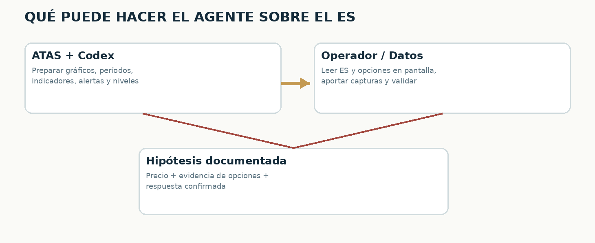
Figura 13 · Material gráfico del manual original
Figura 6.1 · Arquitectura didáctica propuesta: automatizar la preparación; reservar la lectura y validación del ES al operador. Esquema DID, no captura de ATAS.
4.2 Separación de responsabilidades
La IA es útil para tareas repetibles y especificaciones; el criterio humano sigue siendo necesario para distinguir observación, estimación y causalidad. El usuario aporta la fuente, la fecha de la captura, el instrumento exacto, el vencimiento, la convención de signo y el estado de la vela. La respuesta de ChatGPT o Codex debe distinguir lo visible, lo calculado por ATAS, las hipótesis de cobertura y las confirmaciones posteriores.
EVIDENCIA DEM = lo narrado o mostrado en un tutorial; DOC = capacidad confirmada en documentación; DID = procedimiento docente propuesto; PEN = pendiente de comprobar en la instalación concreta. Estas etiquetas se mantienen en el manual.
CAPÍTULO09
9. Protocolo intradía para el futuro ES
OBJETIVO Dejar preparada la plataforma y generar un parte de mercado trazable, sin convertir niveles derivados de opciones en señales automáticas de entrada.
5.1 Preparación de la sesión (antes de abrir posiciones)
•Anotar fecha, zona horaria, contrato concreto de ES, proveedor de datos, sesión RTH/ETH y estado de las velas seleccionadas. Evitar mezclar futuro continuo con un contrato operativo sin indicarlo.
•Solicitar al agente la apertura de dos gráficos complementarios del mismo contrato, sin cerrar los existentes; por ejemplo, una vista de contexto y otra de ejecución. Añadir Volume Profile, herramientas de observación y panel de órdenes solo si se autoriza explícitamente.
•Comprobar manualmente que los contratos, períodos, sesiones, escalas y proveedores son correctos. Guardar un espacio de trabajo con nombre versionado, sin sobrescribir el original.
•Registrar referencias de opciones como una capa independiente: cestas 0DTE / vencimientos próximos, Call Wall, Put Wall, Zero Gamma y zonas del Heatmap; anotar proveedor y unidades.
•Construir escenarios condicionales con precio y confirmaciones observables. No atribuir a dealers operaciones concretas a partir de un mapa estimado.
•Durante la sesión, cotejar capturas sucesivas, invalidaciones y eventuales cambios de parámetros; al cierre registrar lo realmente ocurrido.
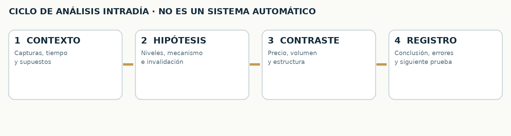
Figura 14 · Material gráfico del manual original
Figura 9.1 · Ciclo de observación, hipótesis, contraste y registro. Esquema pedagógico DID.
5.2 Plantilla de ficha diaria
Campo
Registro recomendado
Fuente
ATAS / Options Analytics / Options X-Ray / observación del ES
Momento
Fecha y hora con zona; vela abierta/cerrada
Contrato
ES mes y vencimiento; evitar ambigüedad de continuo
Configuración
Timeframe, modalidad de barra, proveedor y cesta de opciones
Niveles
Precio, unidad, procedencia y carácter estimado u observado
Hipótesis
Mecanismo probable y qué evidencia faltaría
Confirmación
Precio/estructura y, si procede, volumen/delta
Invalidación
Nivel o comportamiento que descarta el escenario
Resultado
Qué sucedió realmente; capturas y diferencias
5.3 Ejemplo didáctico, no cotización real
Supongamos ES en 6.010, una zona de exposición calculada cercana a 6.020 y una referencia de equilibrio en 6.000. No sabemos si la gamma neta real de los dealers es positiva o negativa. La hipótesis A plantea una subida que se ralentiza cerca de 6.020; la B, una ruptura sostenida. Para distinguirlas exigiríamos comportamiento posterior del precio y evidencia de aceptación/rechazo del nivel. Los números son ficticios; no deben trasladarse a una sesión real.
Situación
Hipótesis condicionada
Contraste observable
Acercamiento a 6.020
Posible menor velocidad o absorción
Rechazo y estructura; sin confirmar causalidad gamma
Ruptura de 6.020
Continuación pese al nivel modelizado
Aceptación por encima, retest y desplazamiento
Regreso bajo 6.000
Escenario alcista pierde fundamento
Rechazo del retest y pérdida de estructura
REGLA DE DISCIPLINA No utilizar cifras de sensibilidad GEX expresadas en USD/1 % como si fueran contratos ES por punto. Tampoco confundir la Call Wall de una cesta 0DTE con la Damping Wall de un modelo agregado; su interpretación requiere convenciones y metodologías diferentes.
Comprueba lo aprendido
En el ejemplo hipotético del ES cerca de 6.020, ¿cuál sería una confirmación válida de ruptura?
Una referencia modelizada no confirma por sí misma el movimiento del precio.Correcto: el comportamiento del precio proporciona el contraste observable.La posición neta y el ajuste efectivo de los dealers no están observados.
CAPÍTULO12
12. Options Analytics y Options X-Ray: integración sin atribuciones indebidas
La integración que proponemos es documental, no una capacidad nativa de lectura MCP confirmada para ES u opciones. El operador observa el indicador en ATAS, registra captura y contexto, y solicita una interpretación condicionada. La limitación aplica también a valores de GEX Profile, GEX Heatmap, VEX, Charm, Flow o Flow Delta. [DOC-AI01; DID-O01]
Capa
Qué aporta
Qué no demuestra por sí sola
GEX Profile: OI/Vol
Distribución modelizada por strike y cesta
Inventario gamma real de dealers
GEX Heatmap
Damping/amplifying estimados por zona y momento
Órdenes ejecutadas de cobertura
Vanna y Charm
Sensibilidad potencial frente a IV y tiempo
Presión efectiva sin posición neta y signo
Flow / Flow Delta
Actividad y medidas del proveedor
Quién tiene exactamente cada lado
Footprint / estructura ES
Contratación y respuesta del precio
Motivo causal único de cada ejecución
8.1 Ejemplo de secuencia de observación
•Capturar simultáneamente precio ES, GEX Profile y Heatmap; registrar la zona horaria y cualquier desfase de SPX a ES.
•Identificar unidades y vencimientos (0DTE frente a agregados), sin comparar directamente USD/1 % con contratos ES por punto.
•Formular dos escenarios contrapuestos, cada uno con confirmación e invalidación observables.
•Aportar el conjunto de capturas a ChatGPT para una síntesis condicional; no decir que Codex obtuvo por MCP el valor de los indicadores.
•Tras nuevas capturas, contrastar el escenario con el precio posterior y documentar en qué falló o acertó el razonamiento.
ANCLA DE NUESTRO ESTUDIO El informe del ES del 20/10/2026 muestra por qué una Call Wall puede superarse y por qué dos indicadores gamma diferentes no deben equipararse. Es una fuente formativa separada de los vídeos AI Connect; la Fase 5 podrá integrar referencias cruzadas precisas.
8.2 Hipótesis de mejora técnica pendiente de verificación
Sería deseable que versiones futuras de AI Connect permitieran lectura autorizada de datos ES y de los indicadores Options Analytics; no se anuncia aquí como función disponible. Cuando ATAS publique cambios, contrastaremos documentación, permisos, instrumentos admitidos y el comportamiento real en una instalación de pruebas antes de adaptar prompts.
Entregable de esta fase
Estado
Protocolo ES con ficha diaria
Desarrollado, DID
Biblioteca de ocho prompts y auditoría de resultados
Desarrollada, DID
Matriz de capacidades y límites MCP
Contrastada con documentación ATAS, DOC
Permisos y protección de credenciales
Propuesta de uso formativo; revisión local pendiente
Integración opciones/GEX/Flow
Diseño documental, no acceso nativo a datos MCP
Comprobación real en ATAS 8.0.16 Ultra
Pendiente de instalación/activación por el usuario
Comprueba lo aprendido
¿Qué afirmación sobre GEX y AI Connect es rigurosa para futuros ES?
El manual no acredita esa capacidad MCP para futuros/opciones.Una exposición estimada no muestra directamente las ejecuciones.Correcto: el análisis documental asistido no presupone acceso MCP a datos de opciones.
24 instrucciones adaptables · DID
La biblioteca de prompts
Cada ficha transforma una intención en una solicitud verificable. Los prompts no se han ejecutado ni acreditan acceso a series de futuros mediante MCP: utiliza los que corresponden a las funciones y permisos realmente disponibles, y proporciona los datos externos cuando sea necesario.
WorkspaceP01
Espacio ES H1 / M5
Propuesta didáctica · adaptar parámetros entre corchetes
Configura un espacio de estudio NUEVO denominado ES_Estudio_[FECHA] con dos gráficos del contrato [ES_VENCIMIENTO]: H1 para contexto y M5 para ejecución, misma conexión [PROVEEDOR] y horario [RTH/ETH]. Añade Volume Profile diario al contexto y reserva un panel DOM para el mismo contrato. Enumera la configuración propuesta y después lo realizado; no alteres el espacio anterior ni envíes órdenes.
WorkspaceP02
Checklist de consistencia
Propuesta didáctica · adaptar parámetros entre corchetes
Revisa la CONFIGURACIÓN del espacio [NOMBRE] y devuelve una tabla de instrumento, contrato, vencimiento, conexión, tipo de barra, temporalidad, sesión y perfil. No asegures haber leído precios o valores de indicadores por MCP. Señala los puntos que requieren mi comprobación visual.
WorkspaceP03
Panel de tres escalas
Propuesta didáctica · adaptar parámetros entre corchetes
Crea una pestaña nueva [NOMBRE] para el contrato [ES_VENCIMIENTO] con H1, M15 y M5, ordenados de izquierda a derecha; no reutilices el continuo cuando haya un contrato concreto indicado. Mantén las sesiones iguales y explica cualquier limitación de diseño de ventanas. No habilites operativa.
WorkspaceP04
Niveles proporcionados
Propuesta didáctica · adaptar parámetros entre corchetes
En el gráfico ES de estudio, dibuja únicamente los niveles facilitados [NIVELES Y ETIQUETAS], diferenciando observados, estimados e hipotéticos en la etiqueta. No calcules precios desde fuentes no disponibles, no actives alertas u órdenes sin autorización y devuelve la lista de objetos creados.
Cluster SearchP05
Ventas en mecha inferior
Propuesta didáctica · adaptar parámetros entre corchetes
Configura Cluster Search para detectar velas con volumen agresor vendedor en la mecha inferior superior a [UMBRAL] contratos y cierre alcista, sobre [CONTRATO] [MARCO]. Identifica qué parámetros nativos traducen cada condición y devuelve los valores aplicados. Una coincidencia no implica absorción confirmada; no ejecutes órdenes.
Cluster SearchP06
Imbalance consecutivo
Propuesta didáctica · adaptar parámetros entre corchetes
Propón ajustes de Cluster Search para tres niveles consecutivos de desequilibrio comprador con ratio Ask/Bid >= [RATIO], volumen mínimo [MIN], sesión [RTH/ETH]. Trata explícitamente ventas cero, niveles vacíos y barras incompletas. Si algún parámetro no existe, indícalo sin simular la detección.
Cluster SearchP07
Falsos positivos
Propuesta didáctica · adaptar parámetros entre corchetes
Audita una configuración de Cluster Search que yo adjuntaré. Redacta cinco situaciones en las que puede marcar una vela sin que exista un giro posterior. Compara condición programada con inferencia microestructural. No afirmes haber leído datos históricos ES vía MCP.
Cluster SearchP08
Comparación de umbrales
Propuesta didáctica · adaptar parámetros entre corchetes
Prepara dos variantes de un filtro Cluster Search con umbrales [A] y [B], idénticas en las demás condiciones. Detalla exactamente las diferencias y cómo compararía manualmente conteos por sesión, sin ajustar umbrales a posteriori buscando resultados favorables.
Hypothesis TestP09
Hipótesis tres niveles
Propuesta didáctica · adaptar parámetros entre corchetes
Formula sin ejecutar una hipótesis: entrada larga tras tres niveles de precio consecutivos Ask/Bid >= 3, cierre en el tercio superior y stop a [TICKS] ticks del mínimo. Define costes, deslizamiento y objetivo [R]; resuelve casos de Bid=0 y vela de rango cero. No ejecutes backtest ES si careces de datos históricos explícitamente aportados.
Hypothesis TestP10
Separación temporal
Propuesta didáctica · adaptar parámetros entre corchetes
Con el CSV histórico que adjunte [FUENTE], divide cronológicamente los datos en desarrollo [PERIODO_A] y evaluación fuera de muestra [PERIODO_B]. Define métricas de frecuencia, expectativa, drawdown y sensibilidad a costes. Prohíbe reajustar parámetros usando la muestra final. Muestra faltantes de datos.
Hypothesis TestP11
Control aleatorio comparable
Propuesta didáctica · adaptar parámetros entre corchetes
Diseña un control de entradas aleatorias comparable en ventana horaria, dirección, número de entradas, duración máxima y costes a mi estrategia [REGLAS]. No calcules resultados si no te aporto el dataset. Devuelve plan reproducible, variables controladas y sesgos posibles.
Hypothesis TestP12
Auditar sobreajuste
Propuesta didáctica · adaptar parámetros entre corchetes
Examina el reporte histórico adjunto [INFORME] y distingue resultados exploratorios, seleccionados y fuera de muestra. Identifica las búsquedas múltiples de parámetros y una prueba de sensibilidad. No infieras robustez solo del beneficio neto.
Indicator from DescriptionP13
Volumen y delta divergente
Propuesta didáctica · adaptar parámetros entre corchetes
Diseña para ATAS un indicador de estudio que marque barras cerradas con volumen > 2 veces la media de las 20 barras ANTERIORES y delta contrario al signo de cierre-apertura. Excluye dojis, delta cero y primeros 20 registros sin histórico. Presenta pseudocódigo y pruebas antes de guardar; no ejecutes órdenes.
Indicator from DescriptionP14
Señal y no repintado
Propuesta didáctica · adaptar parámetros entre corchetes
Revisa el código de [INDICADOR] y explica cómo evita usar información de barras futuras o la vela todavía abierta. Propón casos límite: sesión nueva, histórico insuficiente, volumen cero, serie discontinua y recálculo tras cambios visuales.
Indicator from DescriptionP15
Dos fases de aceptación
Propuesta didáctica · adaptar parámetros entre corchetes
Para el indicador [NOMBRE], separa validación técnica (compila y ejecuta), semántica (marca justo la condición prevista) y estadística (utilidad comprobada con datos). Devuelve una matriz de aceptación y señala qué pruebas debe hacer el usuario en ES.
Port IndicatorP16
Análisis antes de portar
Propuesta didáctica · adaptar parámetros entre corchetes
Analiza el código adjunto de [PLATAFORMA/VERSIÓN]. Identifica licencia, entradas, datos, indexación, horario, eventos, dependencias y riesgo de repintado. Propón equivalencias con ATAS y bloqueos. No escribas una versión final ni sustituyas indicadores hasta aprobar el plan.
Port IndicatorP17
Prueba de equivalencia
Propuesta didáctica · adaptar parámetros entre corchetes
Después de portar [INDICADOR], genera una tabla de cinco casos de prueba sobre los MISMOS datos de entrada y compara valor numérico y señal de origen/ATAS, tolerancia [EPSILON], comportamiento en NaN, sesiones y cierre de vela. Deja diferencias documentadas; no declares equivalencia solo por estética.
Port IndicatorP18
Migración segura de Pine
Propuesta didáctica · adaptar parámetros entre corchetes
Te proporcionaré un Pine Script [VERSIÓN] de uso autorizado. Adapta la lógica a la API de indicadores de ATAS, diferenciando series, referencias históricas y alertas. Presenta el código, explica cambios semánticos y exige contraste manual barra a barra en ES.
ES y opcionesP19
Informe GEX / Flow desde capturas
Propuesta didáctica · adaptar parámetros entre corchetes
Analiza SOLO las capturas adjuntas [FECHA/HORA] de ES, Options Analytics y Options X-Ray. Separa hechos observables, indicadores estimados, hipótesis sobre cobertura y confirmaciones de precio. Declara la convención de signo y unidades de cada fuente; si no son legibles, consígnalo. No afirmes acceso MCP directo a GEX, VEX, Charm o Flow.
ES y opcionesP20
Escenarios condicionales
Propuesta didáctica · adaptar parámetros entre corchetes
Con el contexto que aporto [CONTRATO/SESION/NIVELES], desarrolla dos escenarios opuestos para ES. En cada uno incluye activación, confirmaciones mediante estructura/volumen/delta, invalidación y datos todavía ausentes. No conviertas una Gamma Wall modelizada en garantía de pinning.
ES y opcionesP21
Diario de sesión
Propuesta didáctica · adaptar parámetros entre corchetes
Con mis capturas ES etiquetadas [HORAS] y notas [REGISTRO], redacta un diario de la sesión: hipótesis inicial, evidencias nuevas, cambio de escenario, validación/invalidez y aprendizaje. Señala toda cifra no comprobada y no inventes información de pantalla.
ES y opcionesP22
Control de confirmaciones
Propuesta didáctica · adaptar parámetros entre corchetes
A partir de mis capturas [ARCHIVOS], construye una tabla por nivel ES con evidencia inicial, reacción del precio posterior, volumen y delta, hipótesis vigente, confirmación e invalidación. Marca por separado cualquier inferencia sobre cobertura gamma no observada directamente.
ES y opcionesP23
Auditoría de fuentes y signo
Propuesta didáctica · adaptar parámetros entre corchetes
Antes de interpretar las capturas [ARCHIVOS], crea una ficha de fuente para GEX, VEX, Charm y Flow: proveedor, cesta de vencimientos, unidad, convención de signo, hora y escala SPX/ES. No combines magnitudes incompatibles. Lista dudas imprescindibles antes de ofrecer escenarios.
ES y opcionesP24
Cestas y sensibilidades
Propuesta didáctica · adaptar parámetros entre corchetes
Compara mis capturas 0DTE, Rest of week y This week y distingue GEX, Vanna y Charm conforme a la convención de la plataforma indicada. Explica qué cambia por vencimiento y qué hipótesis sobre cobertura serían condicionales. No equipares USD/1% con contratos ES por punto.
Consultar la biblioteca original del manual
CAPÍTULO10
10. Biblioteca de prompts para Codex y AI Connect
Los siguientes textos son instrumentos DID para adaptar. Se clasifican según la capacidad documentada y restringen expresamente los cambios de plataforma. En la preparación de este manual no se ejecutaron sobre la instalación del usuario; cada resultado debe comprobarse después de activar AI Connect compatible.
6.1 Preparación de espacios y gráficos
PROMPT DID · PREPARAR ES En ATAS abre un espacio de trabajo NUEVO llamado ES_Estudio_[fecha]. No cierres ni sobrescribas espacios existentes. Incluye dos gráficos del contrato ES que yo especifique: uno H1 y otro M5, ambos con la misma sesión. Añade Volume Profile en la vista de contexto y deja preparada una zona para el libro de órdenes. Antes de cambiar algo, enumera el plan; al terminar devuelve una lista de módulos y parámetros creados. No habilites operativa automática. | MODO: configuración permitida
PROMPT DID · PLANTILLA DE INDICADORES En el gráfico ES que te indique, añade los indicadores [nombres exactos] con los ajustes que enumeraré. No inventes valores por defecto: pregunta si alguno es imprescindible. Devuelve parámetros aplicados y cambios efectuados; no afirmes haber leído los valores mostrados del indicador. | MODO: configuración permitida
PROMPT DID · TRAZAR NIVELES RECIBIDOS Dibuja en el gráfico ES indicado las referencias 6000, 6010 y 6020 como niveles ficticios de un ejercicio, etiquetados DID. No deduzcas niveles del mercado ni actives órdenes. Si el contrato no está abierto, solicita confirmación. | MODO: dibujo con precios aportados
6.2 Creación y portabilidad de indicadores
PROMPT DID · DISEÑO DE INDICADOR Diseña un indicador para ES que marque velas con volumen mayor que dos veces la media de las 20 velas anteriores y delta opuesto a la dirección cierre-apertura. Excluye dojis, delta cero y barras incompletas. Antes de generar código, repite las reglas y sus límites. Compila y presenta el código y la lista de pruebas que debo comprobar manualmente; no afirmes disponer del histórico ES mediante MCP. | MODO: generación de código; verificación manual
PROMPT DID · MIGRACIÓN DESDE OTRA PLATAFORMA Examina el código adjunto de [TradingView/NinjaTrader/MetaTrader] y registra funciones, series, licencias y dependencias. Propón equivalencias en ATAS y diferencias inevitables. Genera una versión de prueba, sin sustituir mi indicador original. Devuelve matriz de comprobaciones barra a barra que yo ejecutaré. | MODO: portabilidad; verificación manual
6.3 Preparación de estudios que requieren datos aportados
PROMPT DID · LECTURA DE CAPTURAS DE OPCIONES Trabaja SOLO con las capturas y cifras que adjunte del ES y Options Analytics. Separa: observado, calculado por el proveedor, supuesto de posicionamiento e hipótesis. Identifica cesta de vencimientos, fecha y signos; si un valor es ilegible, indícalo. No afirmes que el agente de ATAS ha leído directamente GEX, Flow, VEX o Charm por MCP. | MODO: análisis externo basado en archivos
PROMPT DID · HIPÓTESIS Y VALIDACIÓN Te facilitaré una tabla histórica de señales ES y resultados. Formula por adelantado entrada, stop, salida, comisiones y slippage. Separa entrenamiento y prueba fuera de muestra; compara con un control razonable y presenta limitaciones. No utilices series ni resultados que no haya aportado; no prometas rentabilidad. | MODO: análisis externo condicionado a datos
PROMPT DID · RESUMEN DE SESIÓN Con las capturas etiquetadas por hora y mis anotaciones, redacta un informe de qué niveles se aproximaron, qué confirmaciones aparecieron y qué hipótesis quedaron invalidadas. Distingue resultado observado de interpretación probabilística. Devuelve también tres dudas pendientes, sin recomendaciones de compra/venta. | MODO: síntesis documental
6.4 Cómo auditar cada respuesta del agente
Antes de aprobar un cambio
Pregunta de control
Identidad
¿Es el contrato ES correcto y la sesión pedida?
Alcance
¿Ha modificado algo fuera del espacio solicitado?
Indicadores
¿La configuración aplicada coincide con lo solicitado?
Datos
¿Ha confundido valores que le suministré con lecturas MCP?
Reversibilidad
¿Puedo volver al workspace anterior sin perderlo?
Seguridad
¿No se han abierto permisos de trading ni enviado órdenes?
CAPÍTULO11
11. Seguridad, permisos y control de cambios
AI Connect trabaja con un agente instalado en el mismo ordenador que ATAS. La conexión depende de la versión beta y del plan Ultra o su prueba; los permisos específicos se configuran dentro de ATAS. Un chat remoto o en navegador no constituye una conexión MCP local. [DOC-AI01]
7.1 Política mínima para Trading-Formación
•Utilizar un entorno o espacio de trabajo de estudio y conservar una versión intacta antes de modificarlo.
•Mantener deshabilitadas las funciones de trading o modificación de órdenes si la finalidad es formación y análisis. Revisar los permisos de la pestaña Access, ya que pueden variar por versión.
•No pegar tokens de conexión ni credenciales en este chat, documentos compartidos, capturas ni repositorios. Si se divulgan, regenerarlos en ATAS.
•Antes de ejecutar un prompt de escritura, solicitar un resumen del cambio propuesto y su alcance.
•Revisar el registro de acciones de la integración; conservar los prompts, versiones de código y parámetros. Si existe una función de deshacer, comprobar su efecto concreto antes de confiar en ella.
•Separar las pruebas con datos históricos de cualquier operación real; documentar costes, fuentes y limitaciones de la simulación.
NO CONFUNDIR La activación de AI Connect no equivale a dar permiso para que el agente envíe órdenes. Los controles deben revisarse y los permisos de operativa se mantendrán desactivados en nuestro uso formativo.
7.2 Matriz simple de permisos recomendados
Grupo funcional
Necesidad en nuestro curso
Decisión recomendada
Lectura de estructura de workspace
Consultar configuración actual
Permitir si se necesita y la sesión está protegida
Modificar gráficos / indicadores
Preparación y pruebas
Permitir solo en espacio de estudio
Generación/compilación de código
Desarrollo de indicadores
Permitir con revisión de código y versiones
Acceso a datos de futuros por MCP
No disponible según documentación
No suponer ni intentar eludir la limitación
Operaciones / gestión de órdenes
No necesarias para formación
Desactivar
Token MCP
Autenticar conexión local
Mantener secreto y regenerar si se expone
CAPÍTULO13
13. Glosario esencial de ATAS AI Connect
AI Connect — Funcionalidad de ATAS para conectar agentes externos mediante MCP, con límites de versión, licencia y permisos.
MCP — Model Context Protocol — Protocolo de conexión entre aplicaciones y agentes; no concede automáticamente acceso a todos los datos de ATAS.
Agente — Software que interpreta instrucciones y utiliza herramientas permitidas para crear, configurar o consultar recursos disponibles.
Workspace / espacio de trabajo — Organización de instrumentos, gráficos, indicadores y paneles que prepara el operador para su sesión.
Cluster Search — Herramienta para buscar coincidencias de condiciones sobre los datos de clúster o footprint según filtros configurados.
Footprint — Vista de contratación por nivel de precio utilizada para examinar volumen ejecutado al bid y al ask.
Delta — Diferencia entre volumen agresor comprador y vendedor, conforme a la convención del proveedor.
Absorción — Hipótesis microestructural: órdenes pasivas contrarrestan agresión; un patrón visual aislado no la confirma.
Backtest — Evaluación histórica de reglas especificadas; su resultado no acredita automáticamente ventaja futura.
Fuera de muestra — Datos reservados para evaluar el comportamiento de reglas que no se ajustaron sobre ellos.
Portabilidad — Adaptación de un indicador desde otra plataforma, que requiere pruebas de equivalencia funcional.
GEX / VEX / Charm — Magnitudes modelizadas sobre sensibilidades de opciones; no presumir lectura automática por AI Connect para ES.
DEM / DOC / DID / PEN — Etiquetas editoriales: demostración observada; documentación consultada; propuesta didáctica; pendiente de verificar.
CAPÍTULO14
14. Catálogo de imágenes y criterios de lectura
Se incluyen trece fotogramas reales seleccionados de los cinco tutoriales y dos esquemas originales. Los fotogramas evidencian acciones y pantallas de una demostración: no certifican la validez estadística ni el acceso técnico efectivo en la instalación del lector.
Figuras 2.1–2.3 · AI Workspace Tab. Solicitud y organización final de gráficos, 00:22–00:55.
Figuras 3.1–3.3 · AI Cluster Search. Configuración del patrón y coincidencias mostradas, 00:34–00:55.
Figuras 4.1–4.2 · AI Hypothesis Test. Formulación de reglas y pestaña de prueba, 00:36 y 01:04.
Figuras 5.1–5.2 · AI Indicator from Description. Petición de indicador y resultado tras ajustes, 00:29 y 00:54.
Figuras 6.1–6.2 · AI Port Indicator. Solicitud de portabilidad y resultado en gráfico, 00:23 y 00:36.
Figuras 8.1 y 9.1 · Diagramas originales. Separación entre automatización y observación del ES; ciclo de hipótesis y contraste.
Notas editoriales de consulta
Los recortes ilustran la interfaz presentada por el fabricante en los vídeos de 2026. Los controles de una versión posterior pueden diferir. Los ejemplos didácticos se separan de las funciones demostradas y no deben utilizarse para ejecutar operaciones sin revisión independiente.
CAPÍTULO15
15. Fuentes y trazabilidad documental
[DEM-W01] ATAS, ai-workspace-tab-en-nosubs.mp4 y transcripción inglesa original. Demostración de creación de workspace.
[DEM-C01] ATAS, ai-cluster-search-en-nosubs.mp4 y transcripción inglesa original. Demostración de filtros.
[DEM-H01] ATAS, ai-hypothesis-test-en-nosubs.mp4 y transcripción inglesa original. Demostración promocional de prueba histórica.
[DEM-I01] ATAS, ai-indicator-from-description-en-nosubs.mp4 y transcripción inglesa original. Demostración de generación de indicador.
[DEM-P01] ATAS, ai-port-indicator-en-nosubs.mp4 y SRT corregido. Demostración de portabilidad.
[DOC-AI01] ATAS, «AI Connect: conectar su agente de IA a ATAS» (documentación oficial consultada 14/11/2026): https://atas-ltd.freshdesk.com/es/support/solutions/articles/72000663243-ai-connect-conectar-su-agente-de-ia-a-atas
[DOC-AI02] ATAS, Beta 8.0.16, novedades del 11/11/2026: https://atas.featurebase.app/changelog/beta-8016
[PROY-ES01] Trading-Formación, «Analítica de opciones aplicada al futuro ES», caso documental del 20/10/2026. Referencia pedagógica independiente de AI Connect.
[DID] Protocolos, prompts, matrices, esquemas y ejemplos hipotéticos de los capítulos prácticos son propuestas docentes, no demostraciones de acceso automático a datos ES.
[PEN] No se ha establecido todavía conexión operativa MCP con una instalación Ultra 8.0.16 del usuario. Tampoco se ha verificado que ATAS ofrezca acceso a datos de opciones por MCP.
Cierre editorial. Manual consolidado a partir de las fases aprobadas de Trading-Formación. Las prestaciones señaladas como pendientes exigen contraste con la versión y licencia instalada; este material no constituye recomendación de inversión.